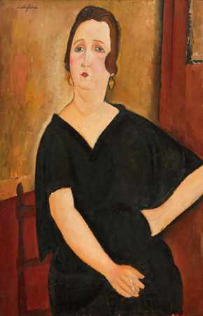
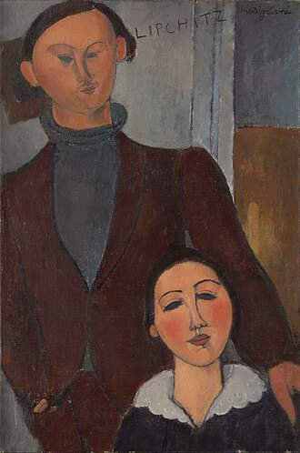

ÉCOLE DE PARIS · DÉBUT DU XXe SIÈCLE
Les œuvres, une rencontre à chaque regard.
Sept peintures modernes à explorer : les portraits de Modigliani, les paysages et la nature morte de Soutine.
01 / LES PORTRAITS
Modigliani — la présence d’un regard

Adrienne, femme à la frange
Une frange nette, un visage allongé : quelques lignes suffisent à installer une présence singulière.

Femme aux cheveux roux
La couleur des cheveux dialogue avec la douceur des traits : un portrait tout en présence.

Madame Amédée
Une attitude retenue, un geste discret : le portrait se découvre dans ses détails.

Jacques et Berthe Lipchitz
Deux figures réunies dans un même cadre : observez les attitudes et le dialogue silencieux entre les personnages.
Des visages allongés, des lignes épurées, une présence silencieuse. Touchez une œuvre pour en parler avec la galerie.
02 / LES PAYSAGES
Soutine — le paysage en mouvement


03 / NATURE MORTE
Nature morte aux fruits
Chaïm Soutine
Les objets les plus simples prennent une autre présence. Ici, les fruits et la table deviennent un terrain de jeu pour la couleur et la matière.
COMPRENDRE LA SÉLECTION
Deux écritures,
une même intensité.
L’École de Paris réunit des artistes venus d’horizons différents, actifs à Paris au début du XXe siècle. Elle ne désigne pas un style unique : Modigliani et Soutine y développent chacun leur langage.
Modigliani — la ligne
Des visages allongés, des formes simplifiées et une présence calme. Ses portraits nous invitent à observer une inclinaison de tête, un regard, la relation entre deux figures.
Soutine — la matière
Des contours qui ondulent, une touche vive et des couleurs intenses. Sa peinture expressive donne aux paysages et aux objets familiers une énergie presque physique.
PRENDRE LE TEMPS DE VOIR
Et vous, qu’est-ce
qui vous retient ?
La ligne
Suivez un contour : est-il souple, étiré, presque tremblant ?
La couleur
Repérez la teinte qui attire votre œil, puis celle qui lui répond.
La matière
Imaginez le geste du pinceau : posé, rapide, chargé de peinture.
Une œuvre retient votre attention ?
Un détail vous intrigue ? Parlons du regard de l’artiste, de sa manière de peindre et de ce qui vous touche dans l’œuvre.
Contacter la galerie